Next: 6.2 Transport Equations
Up: 6. Equations
Previous: 6. Equations
Contents
Index
6.1 Multi-Phase Flow Equations
The flow equations are a set of mass balance and
momentum balance (Darcy's Law) equations, given respectively by,
for

 , where
, where
Table 6.1 defines the symbols in the above equations,
and outlines the symbol dependencies and units.
Here, 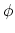 describes the fluid capacity of the porous medium,
and 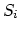 describes the content of phase  in the porous medium,
where we have that
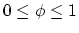 and
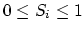.
The coefficient 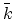 is a 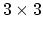 tensor in general.
We assume that it is a scalar here, but should reformulate the
equations so that it is assumed to be diagonal at the very least.
We also assume that and are constant.
Also note that in , we assume that the relative permeability
is given as 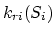.
The Darcy velocity vector is related to the velocity vector, 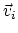,
by the following:
in the porous medium,
where we have that
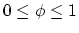 and
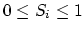.
The coefficient 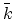 is a 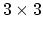 tensor in general.
We assume that it is a scalar here, but should reformulate the
equations so that it is assumed to be diagonal at the very least.
We also assume that and are constant.
Also note that in , we assume that the relative permeability
is given as 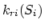.
The Darcy velocity vector is related to the velocity vector, 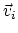,
by the following:
To complete the formulation, we have the following
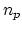 consititutive relations
where,
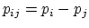 is the capillary pressure between
phase and phase  .
We now have the 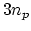 equations,
(6.1), (6.2),
(6.6), and (6.7),
in the unknowns,
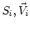, and 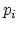.
.
We now have the 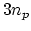 equations,
(6.1), (6.2),
(6.6), and (6.7),
in the unknowns,
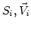, and 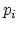.
For technical reasons, we want to rewrite the above equations.
First, we define the total mobility, 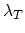,
and the total velocity, 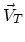, by the relations
After doing a bunch of algebra, we get the following equation
for  :
:
After doing some more algebra, we get the following 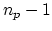
equations for :
The capillary pressures 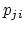 in (6.11) are
rewritten in terms of the constitutive relations in
(6.7) so that we have
where by definition, 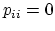.
Note that equations (6.11) are analytically the
same equations as in (6.1).
The reason we rewrite them in this latter form is because
of the numerical scheme we are using.
We now have the equations,
(6.10), (6.11),
(6.9), (6.2), and
(6.7),
in the unknowns,
, and .
Next: 6.2 Transport Equations
Up: 6. Equations
Previous: 6. Equations
Contents
Index
Steve Smith
2008-06-02